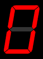
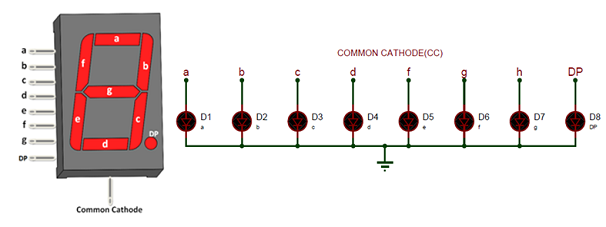
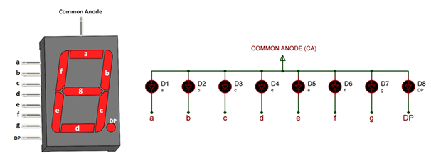

The 7 segments displays are one of the popular types of display used in various types of embedded applications and devices. These displays have 8 LEDs inside it to display numbers and alphabets.
7 Segment Display Pinout Configuration
| Pin Number | Pin Name | Description |
|---|---|---|
| 1 | e | Controls the left bottom LED of the 7-segment display. |
| 2 | d | Controls the bottom most LED of the 7-segment display |
| 3 | Com | Connected to Ground/Vcc based on type of display |
| 4 | c | Controls the right bottom LED of the 7-segment display |
| 5 | DP | Controls the decimal point LED of the 7-segment display |
| 6 | b | Controls the top right LED of the 7-segment display |
| 7 | a | Controls the top most LED of the 7-segment display |
| 8 | Com | Connected to Ground/Vcc based on type of display |
| 9 | f | Controls the top left LED of the 7-segment display |
| 10 | g | Controls the middle LED of the 7-segment display |
7-Segment Display Features
- Available in two modes Common Cathode (CC) and Common Anode (CA)
- Available in many different sizes like 9.14mm,14.20mm,20.40mm,38.10mm,57.0mm and 100mm (Commonly used/available size is 14.20mm)
- Available colours: White, Blue, Red, Yellow and Green (Res is commonly used)
- Low current operation
- Better, brighter and larger display than conventional LCD displays.
- Current consumption : 30mA / segment
- Peak current : 70mA
-
NOTE: The above current rating is for 14.20mm Red colour 7-segment display. More details can be found at
the datasheet
given at the end of this page
7-segment Display Brief Intro
The seven segments displays are the oldest yet one of the efficient types of display used in embedded applications. This display has nothing more than 8 LED inside it. These 8 LEDs are separated into each segments which can be named as a,b,c,d,e,f,g,DP as shown in the picture above. These entire 8 segment LEDs have one end of their pins pulled out of the module as shown above and the other ends are connected together and pulled out as the Common pin. So to make an LED of a particular segment glow we just have to power common pin along with the segment pin. This way we can power more than one segment at a time to represent the numeric number 0-9 and also few Alphabets as shown on the graphic image below. We also have an option to show a decimal point using the DP pin.
Common Cathode (CC) 7 Segment Display
The common cathode display is commonly called CC display. In this type the common pin on the 7-segment display is connected to all the eight Cathode pins of the LEDs. So In order to make this type of seven segment display to work we should connect he Com pin to the Ground pin and power the other pins with Vcc (+5V typically).
Common Anode (CA) 7 Segment Display
The common anode display is commonly called CA display. In this type the common pin on the 7-segment display is connected to all the eight Anode pins of the LEDs. So In order to make this type of seven segment display to work we should connect he Com pin to the Vcc (+5V typically) and ground the required segment pin to turn it on.
How to use a 7-Segment display
One important advantage of a 7-segment display is that, it is very easy to use. Unlike other display modules a 7-segment display can be made to work even without a Microcontroller or a Microprocessor.
This is possible because of the readily available 7-segment counter IC's like IC CD4026. This IC can be used in combination with the display for projects which have very simple circuits. The IC can drive one 7-segment display module and the number that is being displayed can also be incremented or decremented.
But, most commonly a seven segment display is used along with a MCU/MPU in that case, the eight segment pins will be connected to the I/O pins of the Microcontroller and the com pin will be connected to the ground of Vcc depending upon its type (CC/CA). Then these IO pins can be toggled in a particular sequence to display the desired numbers. This particular sequence is explained through the table below. For displaying each number in the seven segment display its respective sequence is given in the table. If we want to display the number “0”, then we need to glow all the LEDs except LED which belongs to line “g” (see 7 segment pin diagram above, so we need a bit pattern 11000000. Similarly to display “1”we need to glow LEDs associated with b and c, so the bit pattern for this would be 11111001.
| Digit to Display | h g f e d c b a | Hex code |
|---|---|---|
| 0 | 1 1 0 0 0 0 0 0 | C0 |
| 1 | 1 1 1 1 1 0 0 1 | F9 |
| 2 | 1 0 1 0 0 1 0 0 | A4 |
| 3 | 1 0 1 1 0 0 0 0 | B0 |
| 4 | 1 0 0 1 1 0 0 1 | 99 |
| 5 | 1 0 0 1 0 0 1 0 | 92 |
| 6 | 1 0 0 0 0 0 1 0 | 82 |
| 7 | 1 1 1 1 1 0 0 0 | F8 |
| 8 | 1 0 0 0 0 0 0 0 | 80 |
| 9 | 1 0 0 1 0 0 0 0 | 90 |
-
NOTE:The table is applicable only for Common Anode type display, if it is a common Cathode type then
simply replace the
'1's with '0's and '0's with '1's.